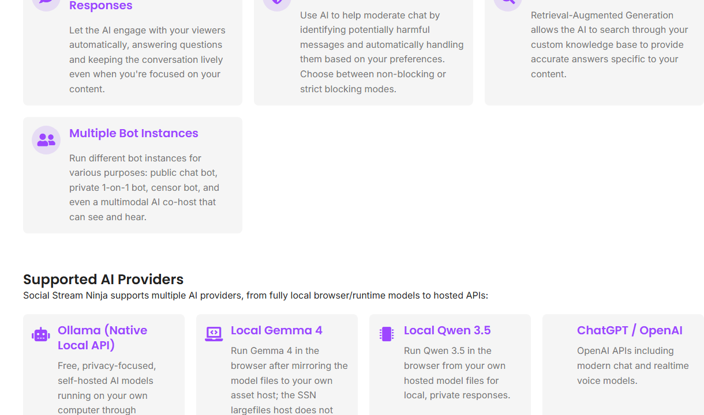
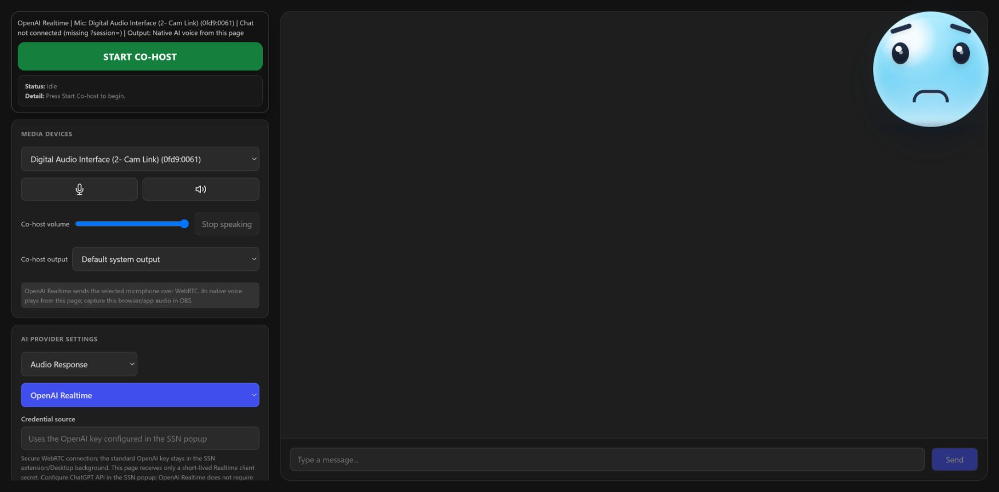
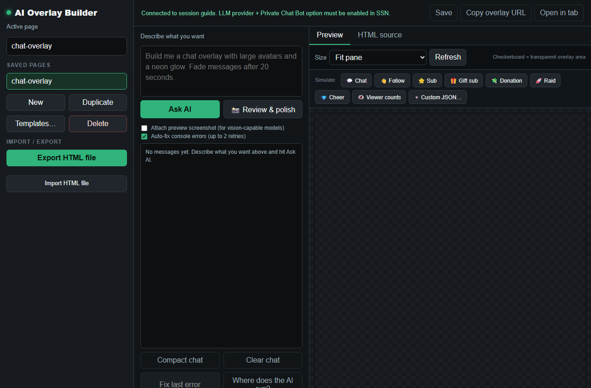

Start With The Job
Do not start by picking a model. Start by deciding what the AI should do for you.

| Job | Use | Best For |
|---|---|---|
| Public chat bot | bot.html | On-stream bot replies, optional TTS, public chat responses. |
| Private helper bot | chatbot.html | Testing prompts, one-on-one help, private bot behavior. |
| AI cohost | cohost.html plus cohost-overlay.html | A visible or audible assistant controlled by the streamer. |
| AI overlay builder | aiprompt.html plus aioverlay.html | Generating and previewing overlay HTML from prompts. |
| Moderation or RAG | AI settings in the popup | Blocking/flagging messages or answering from your knowledge base. |
1. Choose A Provider
Social Stream Ninja can use local or cloud providers. Local can be private and cheap, but it can be slower or harder to install. Cloud providers are usually easier, but accounts, API keys, and costs are controlled by the provider.
- Ollama Native API: good first local option if Ollama is already installed.
- Custom API: use for OpenAI-compatible local servers such as llama.cpp, LM Studio, vLLM, or similar tools.
- Hosted providers: OpenAI, Gemini, DeepSeek, xAI, Groq, OpenRouter, Bedrock, and similar services can change pricing and model names outside Social Stream Ninja.
- Browser/local model pages: useful for advanced local experiments, but model assets and browser limits can make setup heavier.
2. Chat Bot Basics
- Configure an AI provider in the popup.
- Open the bot page you want:
bot.htmlfor the main bot orchatbot.htmlfor a private one-on-one bot. - Use the same
sessionas your dock and overlays. - Test with short messages before letting it answer live chat.
- If the bot sends messages back to a platform, confirm that platform supports send-back and that the account is allowed to post.
Start safe: test in monitor-only or approval-style workflows before allowing automatic public replies.
3. AI Cohost
The cohost has a control side and an output side. The streamer controls it from the dock or cohost.html. OBS captures cohost-overlay.html when you want the cohost on stream.

cohost.html?session=YOUR_SESSION
cohost-overlay.html?session=YOUR_SESSION&tts
More detail: AI Co-host Guide.
4. AI Overlay Builder
The builder is for making an overlay, not for capturing chat by itself. Use aiprompt.html to describe and test the overlay. Use aioverlay.html as the OBS output page after it is saved.

- Open the builder and describe the overlay you want.
- Preview it with sample chat, follow, sub, donation, or raid events.
- Save the overlay.
- Add the matching
aioverlay.htmlURL to OBS with the same session and overlay name.
5. Moderation And Knowledge Search
AI moderation and RAG search are support tools, not magic. Keep a human review path for anything that could ban, delete, block, or publicly answer viewers.
- Use non-blocking moderation first so you can see what the AI would flag.
- Keep knowledge base text short, current, and specific to your stream or product.
- If answers are wrong, fix the source material before changing random prompt wording.
- If a provider times out, test with a smaller model or a simpler prompt before debugging the whole overlay.
Common Fixes
- No response: confirm the AI provider, API key, model name, and endpoint.
- Wrong session: make sure the dock, bot, cohost, and overlay all use the same
session. - Cohost overlay blank: open
cohost-overlay.htmland check the label if multiple overlays are running. - Overlay builder result not showing: confirm the builder page saved the overlay and OBS is pointed at the matching
aioverlay.htmlpage. - Bot cannot post: check platform send-back support, login state, permissions, and rate limits.
Full reference: Commands & API AI Integration.